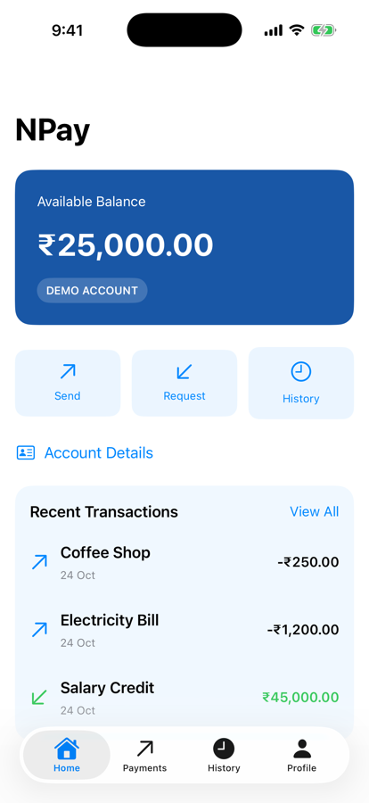
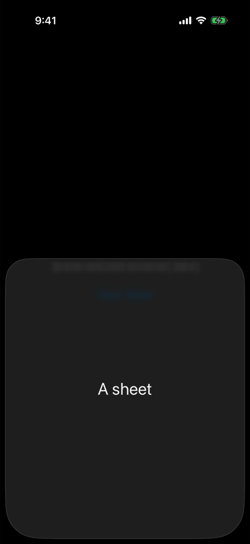

Part 1 · Our NPay milestone (section 1)
One choice, every screen
Passing the theme by hand
HomeScreen(theme: theme) BalanceCard(theme: theme) PaymentsScreen(theme: theme) HistoryScreen(theme: theme)
- Every initializer, every layer, forever
The environment
- Propagates contextual information down the hierarchy
- No parameter at each step

System: light

Profile → Appearance: Dark

Home follows
Part 2 · What is @Environment? (section 2)
The same view reads a different value
EnvironmentExperiment.swift
struct EnvironmentExperiment: View {
@Environment(\.colorScheme)
private var colorScheme
var body: some View {
VStack(spacing: 20) {
Text("NPay Environment Lab")
.font(.title2.bold())
Text(colorScheme == .dark ? "Dark Mode"
: "Light Mode")
Image(systemName: colorScheme == .dark
? "moon.fill" : "sun.max.fill")
.font(.system(size: 48))
}
.padding()
}
}
System light
System dark
| Part | Meaning |
|---|---|
@Environment | SwiftUI property wrapper |
\.colorScheme | key path to an environment value |
colorScheme | local property to read it |
.dark / .light | cases of ColorScheme |
Part 3 · Override the environment (section 4)
The child reads dark; its text turns white
Force one subtree into Dark
VStack {
Text("Normal appearance")
EnvironmentExperiment()
.environment(\.colorScheme, .dark)
}Accessibility labels on screen
"Normal appearance", "Dark Mode"
What happens
.environment(…)overrides the value for that subtree- The child reads
.dark
- “Dark Mode” is there, but invisible
- Dark-scheme text is white; nothing darkened the background

Only the outer text shows
Part 5 · Why .preferredColorScheme()? (section 7)
A preference for the presentation, not a subtree override
Section 7 (store version)
TabView {
// NPay tabs
}
.preferredColorScheme(store.appearance.colorScheme)Experiment (authored)
- Same screen, two ways to say dark
- Then open a sheet
- Overriding
colorScheme: the sheet stays light .preferredColorScheme(.dark): the sheet is dark too

environment override

preferredColorScheme
Part 7 · Read and edit the preferences (section 19)
@Environment retrieves; @Bindable binds
Screens/AppearanceSettingsView.swift
struct AppearanceSettingsView: View {
@Environment(NPayPreferences.self)
private var preferences
var body: some View {
@Bindable var preferences = preferences
Form {
Section("Appearance") {
Picker("Theme",
selection: $preferences.appearance) {
ForEach(NPayAppearance.allCases) { option in
Text(option.title).tag(option)
}
}
.pickerStyle(.segmented)
}
Section("Display") {
Toggle("Show Demo Badge",
isOn: $preferences.showDemoBadge)
}
}
.navigationTitle("Appearance")
}
}Two jobs
@Environment: get the dependency@Bindable: bindings for the picker and toggle
Our wiring (authored)
- Profile → Appearance row
- A new
.appearanceroute
Dark selected
Part 7 · Read the badge preference in BalanceCard (section 20)
Toggle in Profile, change on Home
Components/BalanceCard.swift (condensed)
struct BalanceCard: View {
let balancePaise: Int
@Environment(NPayPreferences.self)
private var preferences
var body: some View {
VStack(alignment: .leading, spacing: 12) {
Text("Available Balance")
.font(.subheadline)
Text(Money.display(balancePaise))
.font(.largeTitle.bold())
if preferences.showDemoBadge {
Text("DEMO ACCOUNT")
.font(.caption.bold())
.padding(.horizontal, 10)
.padding(.vertical, 5)
.background(.white.opacity(0.18), in: Capsule())
}
}
// white text, padding, rounded background as before
}
}Badge on

Badge off
Simulator
Home shows badge: true, ₹25,000.00
[toggle "Show Demo Badge"]
Home shows badge: false, ₹25,000.00